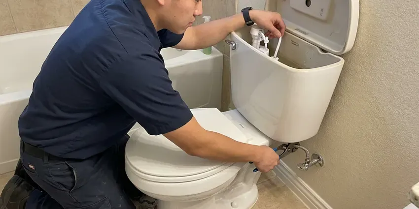
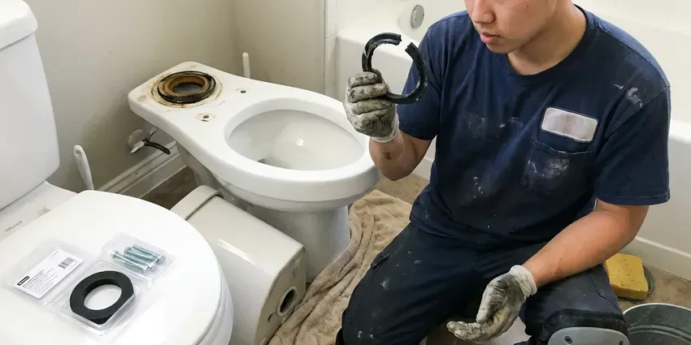
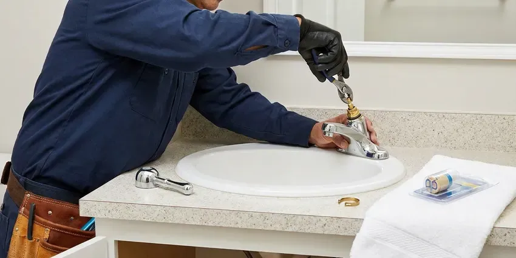

Faucet Installation in New Haven, CT
For homeowners in New Haven, CT, GLV Plumbing provides reliable faucet installation services, ensuring proper function and a clean look.
- Skilled Plumbers
- Satisfaction Guaranteed
- Quick Service Available
- New Supply Lines Included
Clean, Leak-Free Faucet Installation for Your Home in New Haven, CT.
Our team is ready to help you choose and install the right faucet for your space.
Your Trusted Source for Faucet Installation in New Haven, CT
GLV Plumbing focuses on professional faucet installation, ensuring every new fixture is fitted correctly and works the way it should. We handle all types of faucets, from kitchen sinks to bathroom vanities, giving you a watertight seal and proper water flow for your New Haven home.
Our expertise includes:
- Replace old, dripping faucets
- Upgrade kitchen and bathroom fixtures
- Install all major faucet brands

Additional Bathroom Plumbing Services in New Haven, CT
From toilets to showers, our bathroom plumbing team in New Haven, CT repairs, installs, and replaces every fixture with clean, code-compliant work.


Toilet Repair service for New Haven homeowners


Toilet Bowl Replacement near New Haven

New Haven faucet repair specialists


Customers
Why Choose GLV Plumbing for Faucet Installation in New Haven, CT?
We focus on careful installation techniques to avoid drips, leaks, and other common problems associated with new faucet setups.
- Enhanced Aesthetics, A professionally installed faucet upgrades the look and feel of your kitchen or bathroom.
- Flushed Lines, We flush debris from lines so cartridges and aerators stay clear.
- Local Expertise, Our team knows the specific plumbing challenges and water conditions in New Haven, CT.
Citywide Coverage
We install faucets in homes throughout New Haven, from small condos to large custom homes. Booking is easy, and we work around your schedule or remodel timeline.
Experienced Team
Our plumbers have years of experience with all types of faucet installation, from basic replacements to complex custom fixture setups. They are trained to handle the many plumbing configurations found in New Haven homes.
Safety-First Approach
We shut off water, protect cabinets and countertops and keep work areas clean. New shutoff valves make it simple to isolate the faucet later.
Trusted Certified New Haven Plumbing Services Professionals
At GLV Plumbing, we take pride in providing certified plumbing services throughout New Haven, CT. Backed by leading industry credentials, our experienced plumbers combine technical skill with genuine customer care. Whether it is repair, installation, or maintenance, we follow strict safety and quality standards to deliver lasting results you can trust.
Call Us Now PHCC Plumbing Contractor Recognition
PHCC Plumbing Contractor Recognition Better Business Bureau (BBB) Accreditation
Better Business Bureau (BBB) Accreditation Angi Certified Pro
Angi Certified Pro ISO 9001 Quality Management Certification
ISO 9001 Quality Management CertificationTrusted Faucet Installation Services in New Haven, CT
Utility Sink Faucet Installation in New Haven, CT
Utility sinks in laundry rooms or garages require sturdy, functional faucets. We install faucets that can handle heavy use and provide the necessary water flow for these demanding areas. Our plumbers make sure that all connections are solid and that the faucet is securely mounted to prevent any wobbling or leaks, which can be especially damaging in less-frequented utility spaces in New Haven homes.

Laundry and Utility Faucet Installation in New Haven
Laundry sinks and utility tubs need sturdy faucets that handle hot water and heavy use. We install wall-mount and deck-mount utility faucets with hose threads and integrated vacuum breakers. Supply lines are secured and checked. A good utility faucet makes cleanup tasks a lot easier.
Faucet Upgrade and Modernization in New Haven, CT
Beyond simple replacement, we help homeowners upgrade their faucets for better function and style. This might involve installing a touchless faucet, a filtered water dispenser, or a new finish to match updated décor. We check your existing plumbing to confirm compatibility and provide honest advice on the best options for your New Haven, CT home, ensuring your new faucet meets modern standards.
Outdoor Faucet Installation in New Haven
Outdoor faucets, also known as hose bibs, are important for garden and exterior cleaning. We install durable outdoor faucets built to stand up to local weather. Outdoor faucets should be shut off from inside and drained each fall, and frost-free hose bibs are a smart upgrade. Our installations include proper backflow prevention where required by New Haven code, protecting your drinking water from contamination. We use sturdy materials to ensure longevity and prevent leaks.
Pot Filler Installation in New Haven
A pot filler near the range lets you fill large pots without carrying them across the kitchen. We run a new cold water line to the wall behind the cooktop and install a shutoff valve. The faucet is mounted securely and checked for leaks. It is a popular upgrade in kitchen remodels.
Emergency Faucet Installation in New Haven, CT
Sometimes a faucet issue, like a burst pipe connection or severe leak, needs immediate attention. GLV Plumbing offers emergency faucet installation services in New Haven, CT to address urgent plumbing problems. Our team can promptly assess the situation, shut off the water if necessary, and replace the damaged faucet to prevent further water damage to your property. We prioritize rapid response to protect your home.
Wall-Mount Faucet Installation in New Haven, CT
Wall-mount faucets need a rough-in valve inside the wall, so they are best installed during a remodel. We set the valve at the right height and depth for your sink and finished wall surface. Once tile is complete, we install the trim and spout. This style frees counter space and gives a clean look.

Kitchen Faucet Installation in New Haven
The kitchen faucet is one of the most heavily used fixtures in any home. We install all types of kitchen faucets, including pull-down, pull-out, single-handle, and bridge styles. Our plumbers make sure of proper sealing to prevent leaks under the sink, which matters in New Haven homes because moisture can lead to structural issues over time. We also connect water lines securely, checking for good water pressure once the installation is complete.
Faucet Installation Near Me in New Haven, CT
We take pride in being a trusted local plumbing company, providing prompt and professional faucet installation services across New Haven. Our team is always ready to bring our expertise directly to your doorstep, ensuring your new faucet is installed correctly and efficiently.
When you search for faucet installation near me in New Haven, CT, GLV Plumbing is your dependable local choice. Our experienced plumbers are familiar with the plumbing challenges in the area, from older homes with galvanized pipes to new constructions.
GLV Plumbing at a Glance
- Licensed and insured plumbers serving New Haven, CT
- Same-day appointments and 24/7 emergency response
- Upfront, flat-rate pricing before work begins
- 4.8-star rated by 946+ Connecticut customers
New Haven Map
New Haven Information
- Population
- 135,319
- Area codes
- 203/475/860
- Service area
- New Haven and communities within 40 miles
- Nearby
- West Haven, Milford, Bridgeport, Meriden
A large share of homes in Connecticut use private wells, which can be acidic or carry iron, manganese, or radon that call for treatment. Proper faucet installation in New Haven, CT with flushed lines and new supplies safeguards your investment.
Expert Services
Trust our professionals for reliable GLV Plumbing solutions in New Haven, CT.
Our Specialized Plumbing Services in New Haven, CT
At GLV Plumbing, we provide a complete range of plumbing services across New Haven, CT. From leak detection to full system installations, our team ensures fast, precise, and affordable service for both residential and commercial properties. Explore our core services below:


How Our Faucet Installation Service Works in New Haven, CT
Installing a new faucet with us is simple, fast and clean.
Request a Quote
Contact us at (860) 487-7330 to discuss your faucet installation needs. We will gather information about your project and schedule a convenient time for an on-site assessment or provide an initial estimate.
On-Site Assessment
Our plumber will visit your home to look over your current setup, confirm your faucet choice, and provide a precise, upfront quote for the installation. We will answer any questions you have.
Professional Install
We will carefully remove your old faucet, prepare the area, and install your new fixture with precision. All connections are secured, and the system is thoroughly tested for leaks and proper function.
Frequently Asked Questions About Faucet Installation in New Haven
The cost of faucet installation in New Haven, CT typically ranges from $200 to $500, depending on the type of faucet, the complexity of the installation, and any necessary changes to existing plumbing. This estimate generally covers labor and basic supplies, but not the cost of the new faucet itself. We provide transparent, upfront pricing after assessing your specific situation.
Yes, as part of our complete faucet installation service, we will safely and properly remove and dispose of your old faucet. This is included in our installation price.
Yes, we can install filtered water faucets, including dedicated drinking water faucets and those integrated into your main kitchen faucet. These installations often involve connecting to a separate filtration system under the sink.
If your current faucet has internal blockages or a faulty aerator, a new faucet can improve water pressure at that one fixture. However, if the low pressure is a whole-house issue, a new faucet alone will not solve the problem.
We install all major faucet brands, including Moen, Delta, Kohler, American Standard, Pfister, and more. Our plumbers are well versed in the specific installation requirements for a wide range of manufacturers and models.
Faucets carry manufacturer warranties, often lifetime for many brands. We guarantee our installation workmanship and will return if a leak is caused by our work.
Yes. Our experienced plumbers are experienced in installing various specialized faucets, including touchless kitchen faucets, pot fillers, filtered water dispenser faucets, and more. Just let us know your preferences, and we will make sure it is installed correctly and functions perfectly.
Replacing a faucet does not usually require a permit. Adding new supply lines, like for a pot filler during a remodel, may be part of a larger permitted project.
What People Are Saying About Our Plumbing Experts?

Laura S.
I scheduled a water heater replacement, and the team made the process smooth and affordable. The new unit works perfectly, and they cleaned up after completing the job.
Water Heater Replacement · Middletown, CT
Mark T.
When our office needed drain cleaning, GLV Plumbing provided quick, reliable service. The plumber arrived on time and made sure every drain flowed perfectly before leaving. Very satisfied.
Drain Cleaning · West Haven, CTSofia M.
Two new toilets installed in one visit, no mess left behind, and the tech even adjusted a faucet he noticed was dripping. Fair pricing and really friendly.
Toilet Installation · New Haven, CT
James P.
Our commercial plumbing system had a leak under the sink, and GLV Plumbing handled it professionally. The plumbers arrived quickly and restored everything without disruption to our customers.
Commercial Plumbing · Waterbury, CT
Patricia H.
We had a slab leak that two other companies could not find. GLV Plumbing located it in under an hour, explained our options, and the price matched the quote to the dollar.
Slab Leak Repair · Bridgeport, CT
Daniel K.
A pipe burst at 11 pm and they actually answered. The plumber showed up within the hour, shut everything down, and had us back to normal the next morning. Could not ask for more.
Emergency Plumbing · Milford, CT